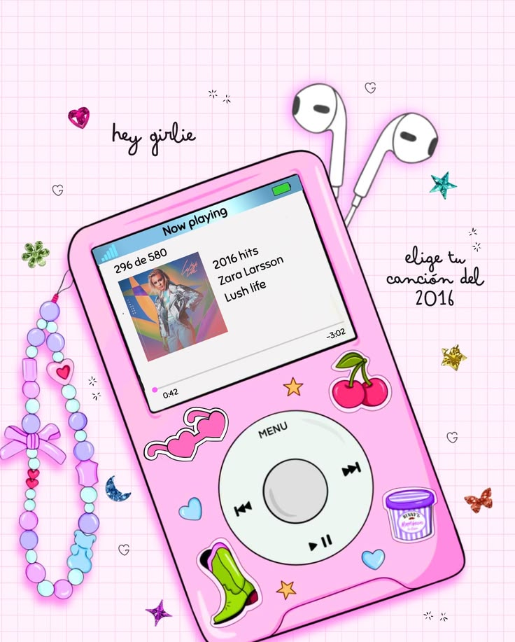

BIENVENIDO A MI BLOG
Un poco de todo, un poco de música
Este es un espacio para compartir, descubrir y disfrutar diferentes formas de vivir la música.
PARA CADA ESTADO DE ÁNIMO
Canciones que nos identifican
Porque todos tenemos una canción que parece hablar de nosotros.

Para recordar
Una canción especial
Esas canciones que te hace recordar tu primer amor.

Para sentir
Cuando habla por nosotros
Porque algunas letras expresan lo que no sabemos decir.

Para disfrutar
La que nunca falla
Esas canciones que siempre mejoran nuestro día.
TU PRÓXIMO DESCUBRIMIENTO
¿Y si hoy escuchamos algo diferente?
A veces encontramos canciones increíbles cuando nos atrevemos a salir de nuestra zona de confort. Explora nuevos sonidos, artistas y géneros musicales.
Conocer artistas